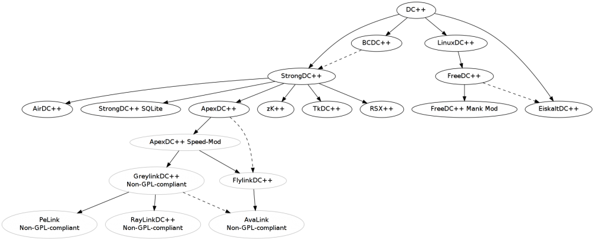

Client Software
From ADCPortal Wiki
Clients are software that every fellow user on the ADC networks use to connect to the hyper nodes (hubs) in order to chat download and further interact with the other community users. The table below will show what features they have and if they base of some other client as some more advanced then other and how far removed from the original source they are cause that can also be a problem if they lapse in updates and merges from the original source thus leaving it open for possible exploitation [1] (see Blog for further info). So make sure your mod is updated to the latest available version of the original client that it bases of to ensure your safety.
 = Status Discontinued: This product has been discontinued by the developer
= Status Discontinued: This product has been discontinued by the developer
 = Status Unknown: This product has not had any updates or releases
= Status Unknown: This product has not had any updates or releases
 = Status Clear: This product is active and working
= Status Clear: This product is active and working
= Status Core Issue: This product is built on an old core and may have issues with compatibility, stability or reliability
DC++ Derivatives Graph
This image show how the code trickles down the ladder on clients, this might give you a clue on how far removed the projects are from the original source.
